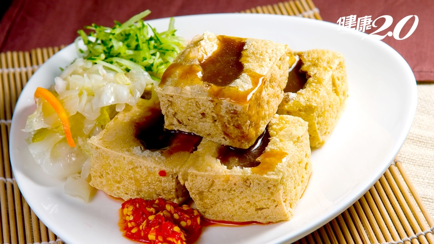
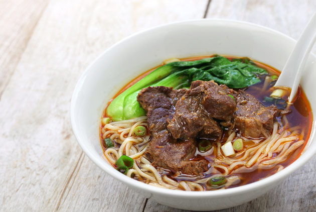

|
 |
 |
 |
| 麻油雞飯 |
香菇雞湯 |
臭豆腐 |
牛肉麵 |
牛肉麵食譜
牛肉麵食譜
材料：
- 牛腩或牛肉片
- 麵條
- 蔥，切段
- 薑，切片
- 大蒜，切末
- 醬油
- 米酒
- 糖
- 八角（可選）
- 肉桂皮（可選）
- 鹽
- 胡椒
- 牛肉湯底（可以使用牛骨熬製）
製作步驟：
- 將牛肉切成適當大小的塊。
- 將蔥段、薑片、大蒜末爆炒至香氣四溢。
- 加入牛肉，煮至變色。
- 加入適量的醬油、米酒、糖、八角、肉桂皮，炒匀。
- 倒入牛肉湯底，加入適量的鹽和胡椒調味，慢火燉煮至牛肉變得軟嫩。
- 同時，將麵條煮熟，撇去浮沫，沥乾水分。
- 在碗中放入煮熟的麵條，將燉好的牛肉和湯倒在上面。
- 撒上蔥花作為裝飾，即可享用美味的牛肉麵。
注意：您可以根據個人口味調整調味料的用量，並根據喜好添加一些香料以增添風味。
心得
我在這堂課學到怎麼做網頁這對我來說是很難得的經驗,因為我本來就不太會用電腦所以真的很難謝謝老師的教導